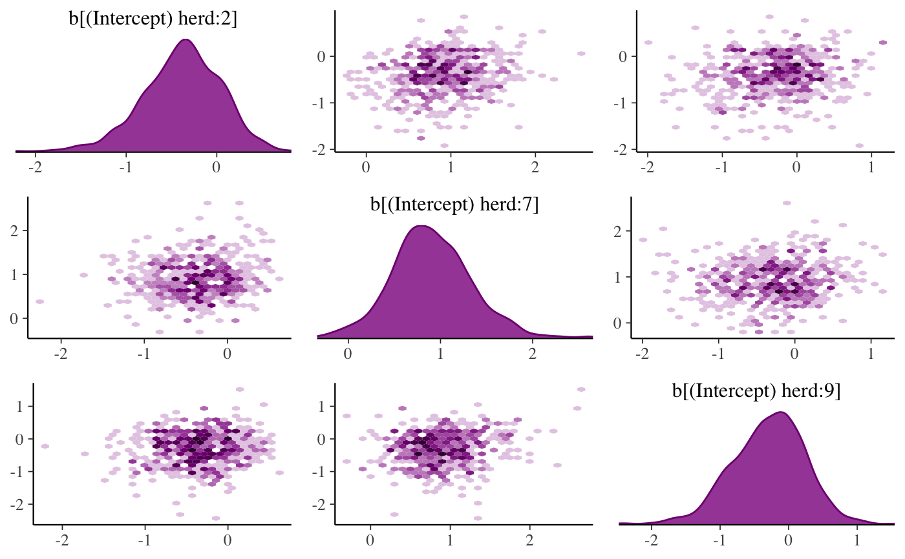
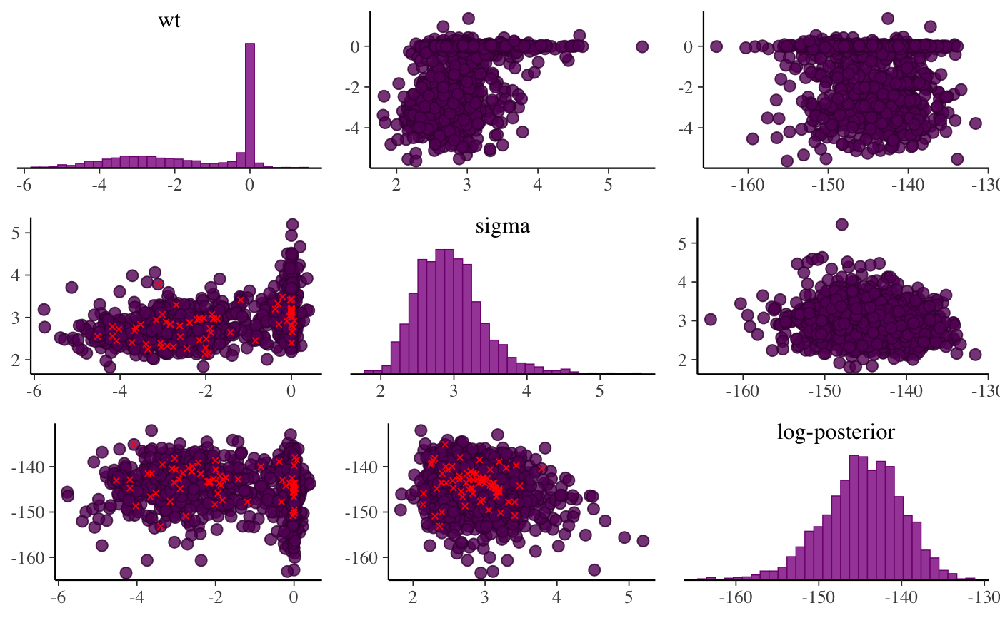
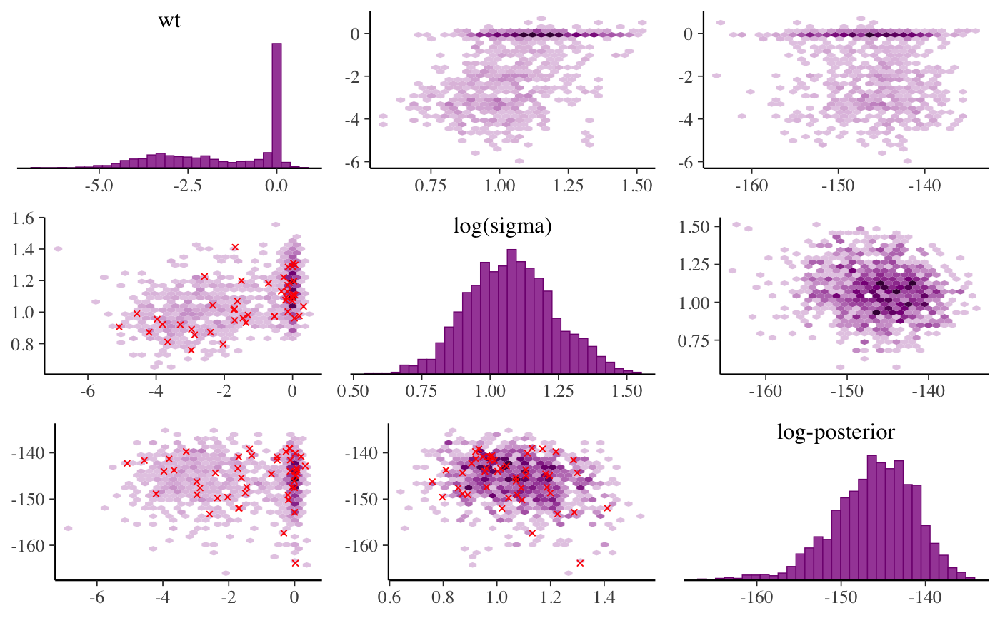
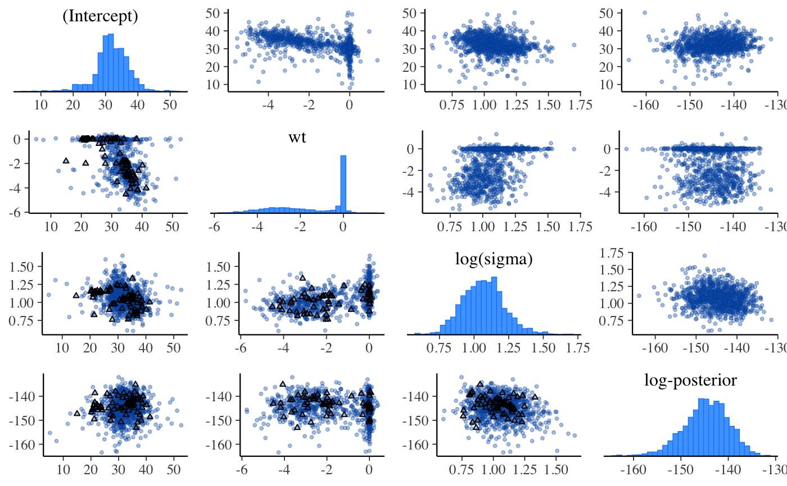
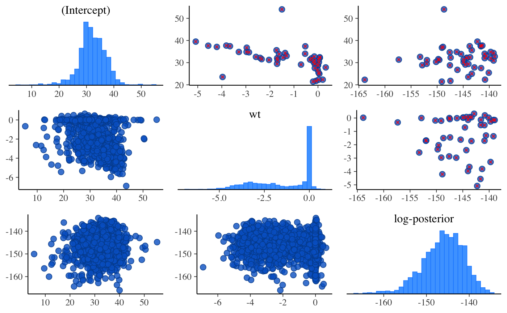

Pairs method for stanreg objects
pairs.stanreg.RdInterface to bayesplot's mcmc_pairs function
for use with rstanarm models. Be careful not to specify too
many parameters to include or the plot will be both hard to read and slow to
render.
# S3 method for stanreg pairs(x, pars = NULL, regex_pars = NULL, condition = pairs_condition(nuts = "accept_stat__"), ...)
Arguments
| x | A fitted model object returned by one of the
rstanarm modeling functions. See |
|---|---|
| pars | An optional character vetor of parameter names. All parameters are included by default, but for models with more than just a few parameters it may be far too many to visualize on a small computer screen and also may require substantial computing time. |
| regex_pars | An optional character vector of regular
expressions to use for parameter selection. |
| condition | Same as the |
| ... | Optional arguments passed to |
Examples
# \donttest{ if (!exists("example_model")) example(example_model) bayesplot::color_scheme_set("purple") # see 'condition' argument above for details on the plots below and # above the diagonal. default is to split by accept_stat__. pairs(example_model, pars = c("(Intercept)", "log-posterior"))# } # \donttest{ # for demonstration purposes, intentionally fit a model that # will (almost certainly) have some divergences fit <- stan_glm( mpg ~ ., data = mtcars, iter = 1000, # this combo of prior and adapt_delta should lead to some divergences prior = hs(), adapt_delta = 0.9, refresh = 0 )#> Warning: There were 47 divergent transitions after warmup. Increasing adapt_delta above 0.9 may help. See #> http://mc-stan.org/misc/warnings.html#divergent-transitions-after-warmup#> Warning: Examine the pairs() plot to diagnose sampling problems#> Warning: Bulk Effective Samples Size (ESS) is too low, indicating posterior means and medians may be unreliable. #> Running the chains for more iterations may help. See #> http://mc-stan.org/misc/warnings.html#bulk-esspairs( fit, pars = c("wt", "sigma", "log-posterior"), transformations = list(sigma = "log"), # show log(sigma) instead of sigma off_diag_fun = "hex" # use hexagonal heatmaps instead of scatterplots )bayesplot::color_scheme_set("brightblue") pairs( fit, pars = c("(Intercept)", "wt", "sigma", "log-posterior"), transformations = list(sigma = "log"), off_diag_args = list(size = 3/4, alpha = 1/3), # size and transparency of scatterplot points np_style = pairs_style_np(div_color = "black", div_shape = 2) # color and shape of the divergences )# Using the condition argument to show divergences above the diagonal pairs( fit, pars = c("(Intercept)", "wt", "log-posterior"), condition = pairs_condition(nuts = "divergent__") )# }